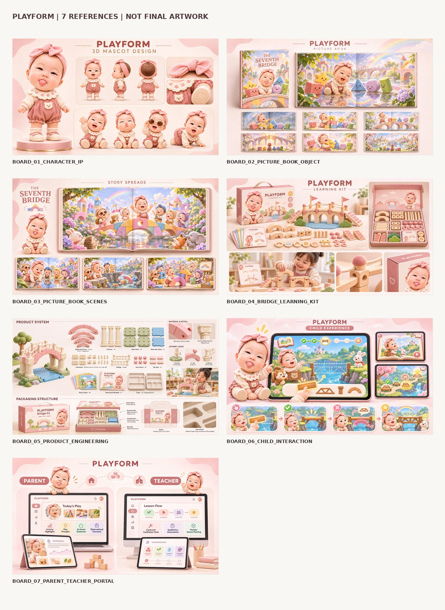
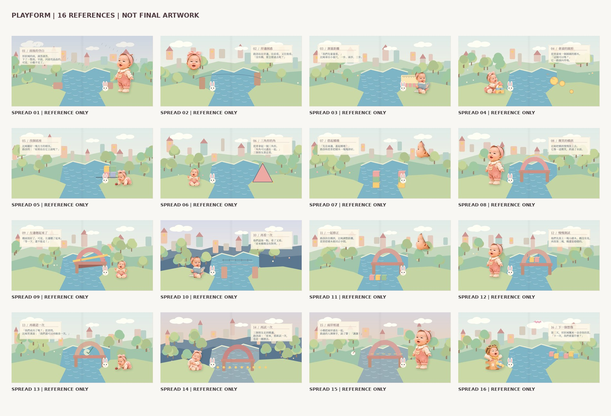

01 / 品牌全貌與教具主視覺 01 / Brand Overview & Kit Visual
展示目的：案例開場，交代產品系統全貌 Purpose: Case opening, presenting the complete product system
PLAYFORM 將原創繪本、實體造橋教具與數位互動整合為一套兒童 STEAM 探索體驗。角色的故事引出真實的建構任務，孩子在閱讀後動手實驗，也能把觀察帶回親子對話與教室活動。

粉色針織蝴蝶結頭飾、圓潤臉頰、蕾絲翻領與豆沙粉吊帶服。總是提出「如果……？」的設想，引導孩子發現橋樑問題。
沉穩溫厚、觀察細膩，隨身攜帶小量尺，習慣先測量跨距、尋找穩固支點，示範如何以理性觀察解決問題。
敏捷靈巧、行動力強，敢於在失敗時大聲說「我們再試一次！」，鼓勵面對挫折與錯誤復原。
展示目的：案例開場，交代產品系統全貌 Purpose: Case opening, presenting the complete product system
展示目的：識別字標、正反白與七色規範 Purpose: Logotype, reversed usage, and seven-color specifications
展示目的：LULO 正側背、BEM、PIP 與表情 Purpose: LULO 3-views, BEM, PIP, and 5 facial expressions
展示目的：封面、封底、書脊與布紋材質 Purpose: Cover, back cover, spine, and cloth texture details
展示目的：故事建立，雨後等待新的橋 Purpose: Narrative establishment: river gap after rain, waiting for a bridge
展示目的：故事推進，三個角色一起搭橋 Purpose: Narrative progression: three companions building the bridge span together
展示目的：故事情節與點選提示連動 Purpose: Story narrative linked with touch-interaction cues
展示目的：盒蓋、分格內托、零件與紙品 Purpose: Full box lid, pulp molded tray compartments, wooden parts, and cards
展示目的：組裝關係、構件與材質細節 Purpose: Structural assembly relationships, joinery, and material textures
展示目的：桌面裝置的建構操作介面 Purpose: Desktop laptop 3D construction and manipulation interface
展示目的：大點選範圍與選取狀態 Purpose: Large touch targets and active state feedback for toddlers
展示目的：具體展示支撐修正前後差異 Purpose: Visualized before-and-after comparison of bridge pier realignment
展示目的：成人協助、孩子動手的實體使用情境 Purpose: Adult-guided, child-centered hands-on bridge building scene
展示目的：家長端的觀察、對話與後續挑戰 Purpose: Qualitative observation log, family prompts, and home extensions
展示目的：教師端 28 分鐘教案與小組觀察 Purpose: 28-minute modular lesson plan (8+12+8) and group rubric
展示目的：海報、教材、教具與教室空間整合 Purpose: Holistic integration of posters, learning materials, and physical kits in classroom
形狀城的雨，滴答滴答，下了一整夜。早晨，河面亮晶晶的。可是，小橋不見了。
點選一個積木形狀，看看哪個形狀在受到力量時不容易變形，最適合當作穩定結構的起點？
孩子在故事中完成了形狀探索與橋拱搭建，主動觀察了三角形與圓形在受力時的差異，並在傾斜後嘗試調整支點。
不需要具備工程背景，透過開放式問題激發孩子的好奇心：
拿出一套家用積木或紙盒，和孩子一起用紙板搭一座跨越兩張椅子的簡易小橋，測試能放幾本書。
單堂 28 分鐘模組化課程規劃，以繪本情節引發動機，接著進行實體教具建構與 3D 觀察，最後以反思圓圈分享收尾。
| 時段 | 課程階段 | 教學引導目標 |
|---|
教師端介面強調質性觀察紀錄，取代標準化測驗分數：
作品集概念圖版：16 / 16（靜態設計視覺，非實物攝影） ｜ 出版級繪本跨頁：未出版（16 / 16 分鏡稿） ｜ 角色 3D：未完成骨架綁定與動畫（造型概念母型） ｜ 產品結構：未驗證（概念幾何，未量產、未經安全認證） ｜ 互動示範：已實作（雙語閱讀、WebGL 3D、兒童任務、家長／教師端）
本案包含創意規格、32 頁故事腳本、向量識別、5 個 GLB 概念模型、可操作 HTML 互動原型，以及 Tab 01 的 16 張作品集概念圖版。圖版為設計視覺，並非實物商品攝影；繪本逐頁出版級插畫仍屬後續製作項目。
包含角色 IP、繪本實體、場景、教具、結構工程與雙後台概念；僅供美術方向參考，圖內含 AI 微文字，不列入正式圖版。

對應 32 頁完整故事腳本之 16 個 2:1 場景分鏡稿（2880×1440）；分鏡已完備，出版級 300dpi 印刷完稿繪製中。

本頁展示品牌識別、原創繪本、教具與數位互動之設計提案及示範原型。實體教具未量產，材料安全（如 EN71/CNS）與教學成效尚未經外部獨立驗證；家長及教師介面使用示範資料，並未蒐集真實學童個資。